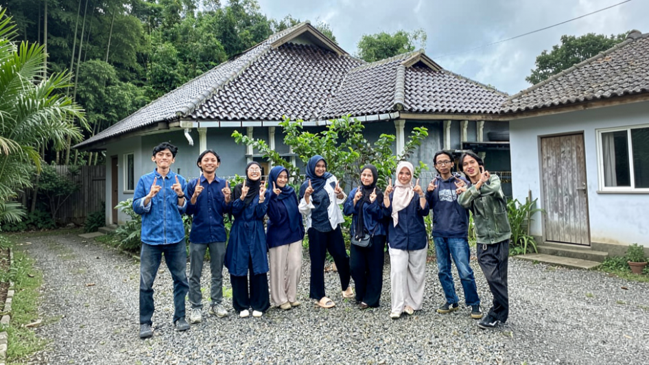

Bidang Internal merupakan bidang yang berfokus pada penguatan organisasi dari dalam. Bidang ini bertanggung jawab dalam membangun kualitas sumber daya anggota BEM, menjaga koordinasi yang efektif, serta menciptakan lingkungan organisasi yang solid dan profesional. Melalui Departemen Pengembangan Sumber Daya Mahasiswa (PSDM) dan Kearsipan, Bidang Internal berperan dalam pembinaan, pengembangan potensi, serta pengelolaan administrasi organisasi secara sistematis dan berkelanjutan.
Ketua Bidang: Widya Rahmah
Wakil Ketua Bidang: Tia Amelda Febriani
Pengembangan Sumber Daya Mahasiswa
Mengembangkan kualitas dan kapasitas anggota BEM melalui pembinaan dan pelatihan. Berfokus pada pembentukan SDM yang unggul, berintegritas, dan profesional.
Arsip Administrasi Organisasi
Mengelola administrasi dan dokumentasi organisasi secara tertib dan sistematis. Menjamin ketersediaan data dan arsip yang akurat serta mudah diakses.